Particle Image Velocimetry (PIV)
Insights of fluid-flow velocity characterization
Fluid Mech.:
equations are known!
\[\begin{align} & \frac{\partial \rho}{\partial t} + \nabla (\rho \vec{V}) = 0\\ & \rho \left[ \frac{\partial \vec{V}}{\partial t} + (\vec{V} \cdot \nabla ) \vec{V} \right] = -\nabla p + \nabla \sigma + \rho \vec{g}\\ & \frac{\partial \rho E}{\partial t} + \nabla \left[ (\rho E + p) \vec{V} \right] = \nabla (\sigma \vec{V}) + \nabla \vec{q} + \vec{q}_R + \rho \vec{g} \vec{V} + \rho \omega_E\\ & \frac{\partial \rho Y}{\partial t} + \nabla (\rho Y \vec{V}) = \nabla \left[ \rho D \nabla Y \right] + \rho \omega_Y \end{align}\]But very few analytical solutions!
Then, if I want…
- validate — Are the models and approximations used correct?
- verify — some solution?
- sizing – Applications to industrial configurations?
- (just) better understand things?
\(\rightarrow\) (Costly) numerical simulations
\(\rightarrow\) (Costly) experimental measurements
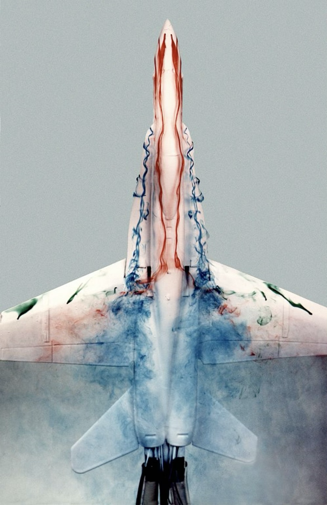
Why PIV?
Measuring fluid-flow velocity principles
- To determine the velocity of an object, distance and time need to be measured (either the distance traveled during a given time or the time needed to travel a given distance).
- But, gases as well as pure liquids do not contain moving objects that reveal the velocity of the fluid.
- Thus, many measurement techniques have been developed, determining the flow velocity indirectly by measuring other quantities, such as:
- pressure (pressure probes),
- rotational speed (wind anemometer),
- heat transfer (hot film, hot wire).
Alternatives to PIV (1/2)
| Pitot tube | Hot Wire Anemometry | Laser Doppler Anemometry | |
|---|---|---|---|
| Sketch | 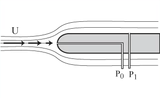 |  |
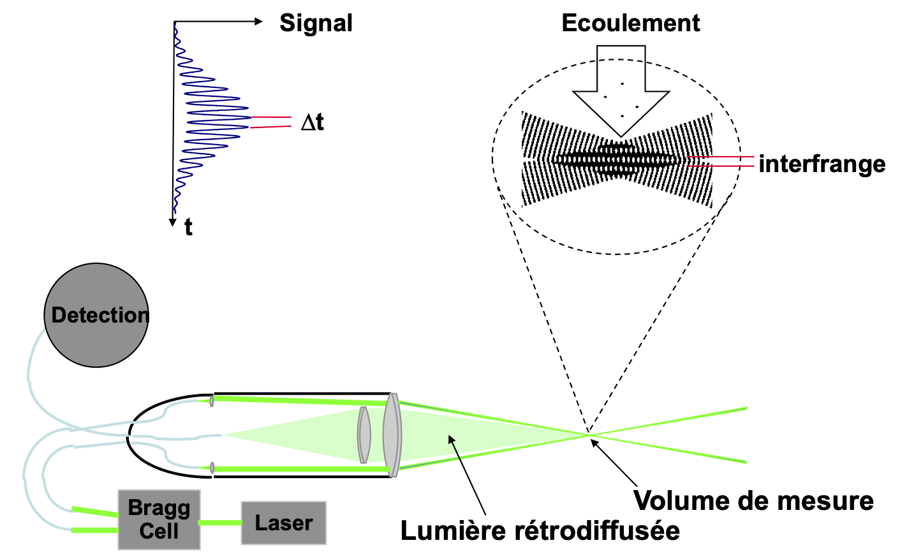 |
| Principle (what is measured) |
Static and dynamic pressures. Bernoulli |
Joule dissipation measurement in a wire | Interferometric meas. of a Doppler shift on scattering particle |
| Pros | Easy to use. Cheap (1 k€) | High time resolution Medium price (10 k€) |
Non intrusive. High time resolution. Suited for several components |
| Cons | Highly intrusive. Very poor resolution |
Intrusive, fragile. Non linear calibration | Non-regular sampling. High price (50-100 k€). Complex settings |
{kind=link}
Alternatives to PIV (2/2)
1d time resolved signal: 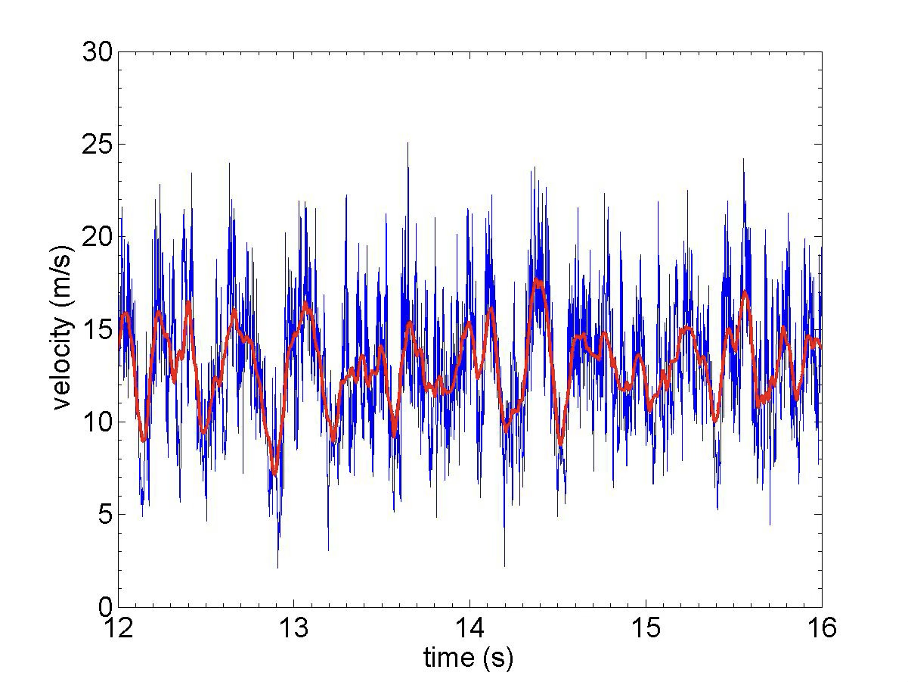
Therefore, the structure of an unsteady flow field cannot be obtained by such methods.
PIV principles (1/2)
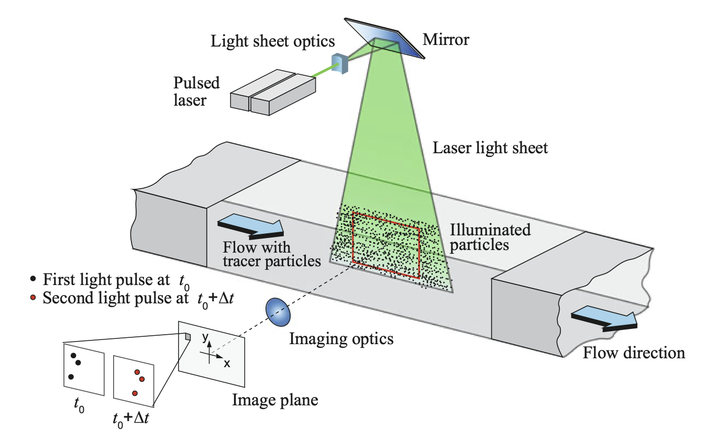
- Seeding: tracer particles are added to the flow.
- Illumination: these tracer particles have to be illuminated (in a plane) of the flow at least twice within a short and known time interval.
- Recording: the light scattered by the tracer particles on a camera.
- Calibration: to determine the relation between the particle image displacement in the image plane and the tracer particle displacement in the flow.
PIV principles (2/2)
- Evaluation: The displacement of the particle images between the light pulses has to be determined through evaluation of the PIV recordings.
- Post-Processing: In order to detect and remove invalid measurements and to extract complex flow quantities of interest, sophisticated post-processing is required.
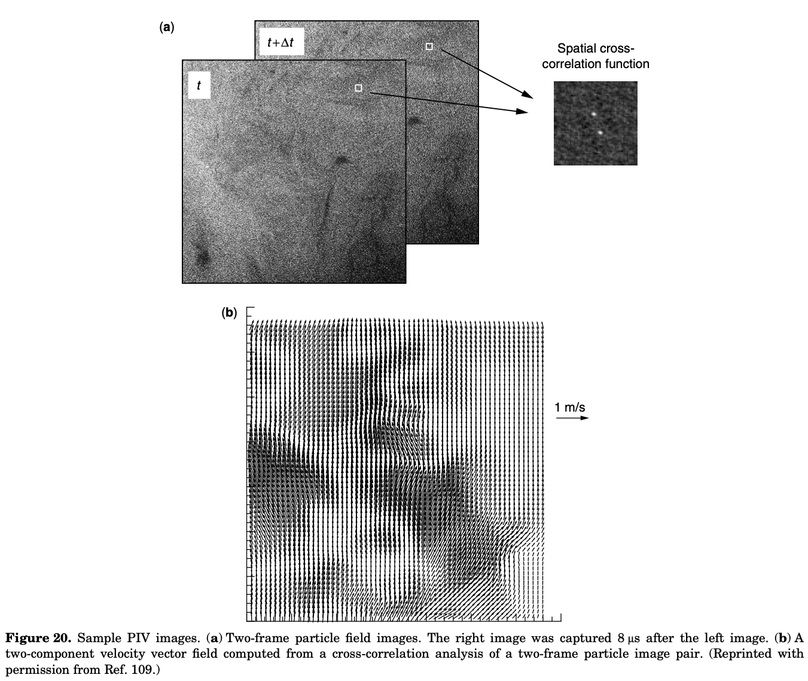
PIV pros
- The most widely applied velocity imaging technique in fluid mechanics.
- PIV is a very robust and accurate technique, which in its most common implementation enables the imaging of two components of velocity in a cross-section of the flow.
- PIV measurements are now commonplace and they have been applied in a wide range of gas- and liquid-phase flows, including microfluidics, large-scale wind tunnels, flames, plasmas, and supersonic and hypersonic flows.
PIV refs
Excellent introductions to PIV can be found in several references:
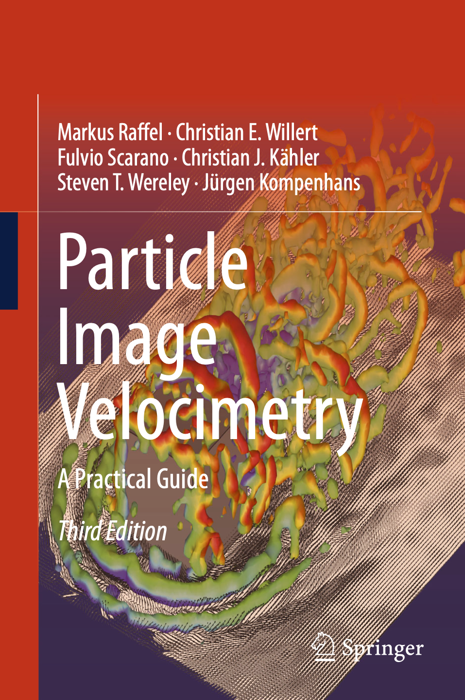
Physical and technical background
Tracer particles
- In contrast to hot wire or pressure probe techniques, PIV is based on the direct determination of the 2 fundamental dimensions of the velocity: length and time.
- On the other hand, the measurement technique is indirect as it determines the velocity of tracer particles instead of the velocity of the fluid.
- Therefore, the interaction of the particles and the surrounding fluid has to be examined in order to avoid significant discrepancies between fluid and particle motion.
Tracer particles
Fluid mech. properties (1/3)
- A primary source of error is the influence of gravitational forces on the velocity of the tracer particles, if the densities of the fluid \(\rho\) and the tracer particles \(\rho_p\) do not match.
- From Stokes’ drag law, assuming spherical particles in a viscous fluid at a very low Reynolds number: \(\vec{U}_g = d_p^2 \frac{\rho_p - \rho}{18 \mu} \vec{g}\).
- Therefore, the sedimentation of particles can be avoided if the density of the fluid and particles is identical (neutral buoyancy).
- This is easily achieved in liquid flows, but not in gas flows. Therefore, the particle diameter must be chosen sufficiently small to minimize the settling velocity of the particles.
Tracer particles
Fluid mech. properties (2/3)
- Particle frequency response: \(\frac{d}{dt}U_p = -18 \frac{\nu}{d_p^2}\frac{U_p - U_f}{\rho_p / \rho_f}\) \[ \Rightarrow U_p(t) = U_f \left(1-\exp \left( t / \tau_p \right )\right)\] with \(\tau_{\rm p} = d_{\rm p}^2 \frac{\rho_{\rm p}}{18 \mu}\), relaxation time scale of the particle.
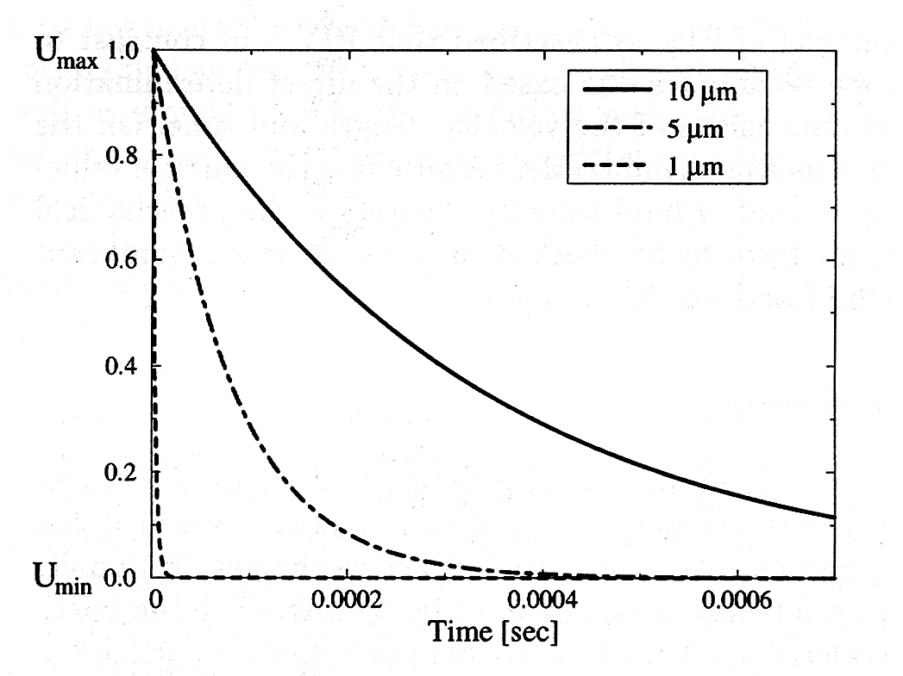
- A convenient measure for the tendency of particles to attain velocity equilibrium with the fluid is given by the Stokes number \[ St = \frac{\tau_{\rm p}}{\tau_{\rm f}}\] where \(\tau_f\) stands for the characteristic time scale of the flow (refers to velocity fluctuations along the particle trajectory).
- A value of the Stokes number below \(10^{-1}\) yields an acceptable flow tracing accuracy.
Tracer particles
Fluid mech. properties (3/3)
| Diameter (\(\mu m\)) | Relative density | Response time \(\tau_p\) (\(\mu s\)) | ||
|---|---|---|---|---|
| Water | Hollow glass spheres | 10 | 1.05 | 0.5 |
| Water | Aluminium powder | 3 | 2.7 | 0.9 |
| Air | Oil dropplets | 1 | 920 | 0.3 |
| Air | SiO\(_2\) beads | 0.8 | 2600 | 5 |
| Air | Inflated bubbles | 300 | 1 | 0.3 |
Tracer particles generation
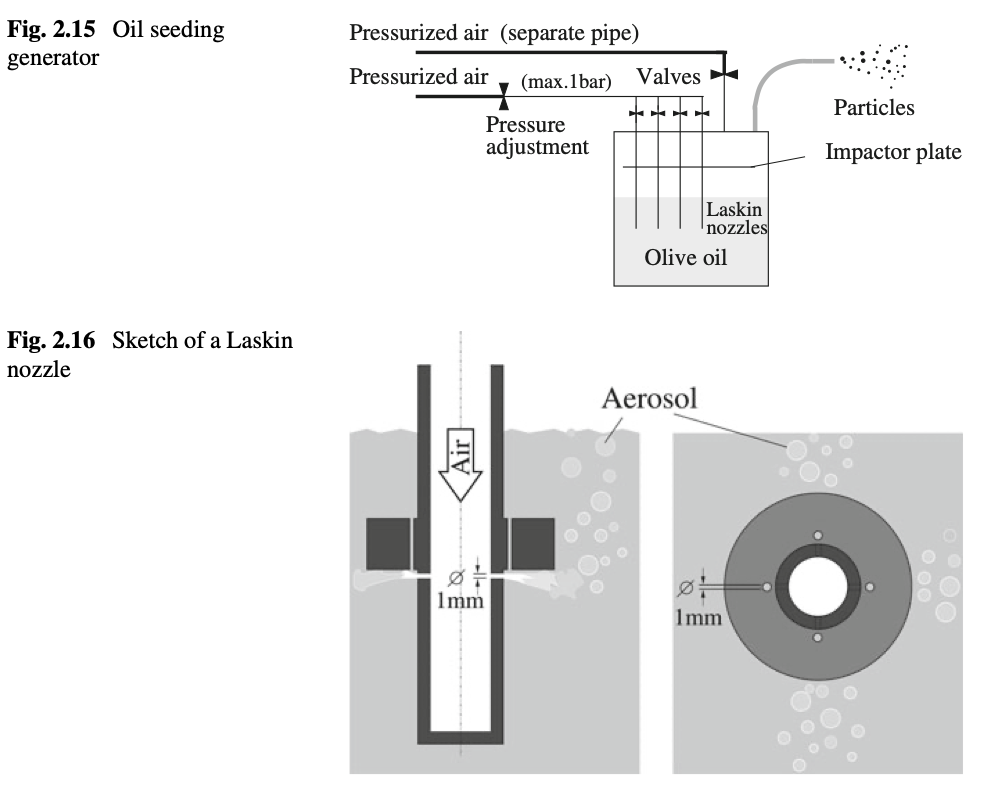
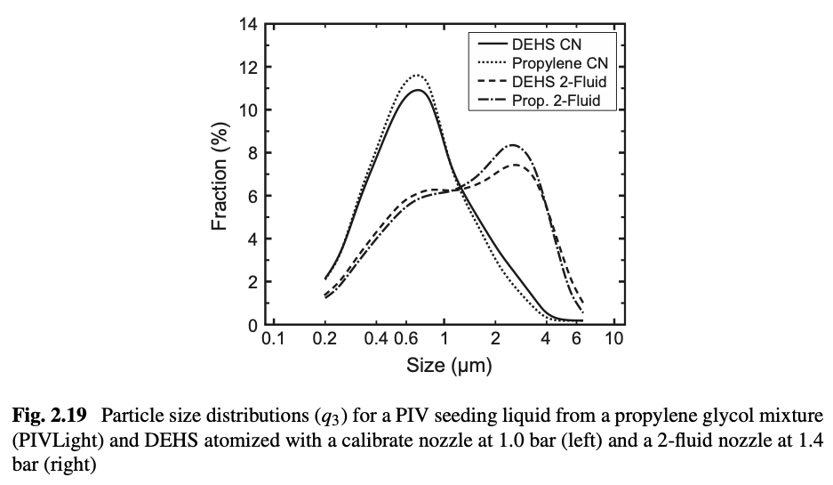
Light scattering
PIV image intensity and contrast \(\propto\) scattered light power: selecting suitable scattering particles is usually more effective and cost-efficient than increasing laser (illumination) power.
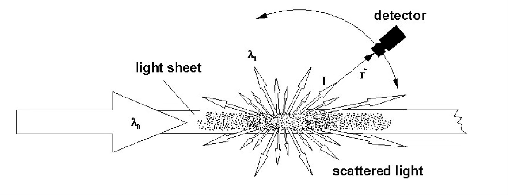 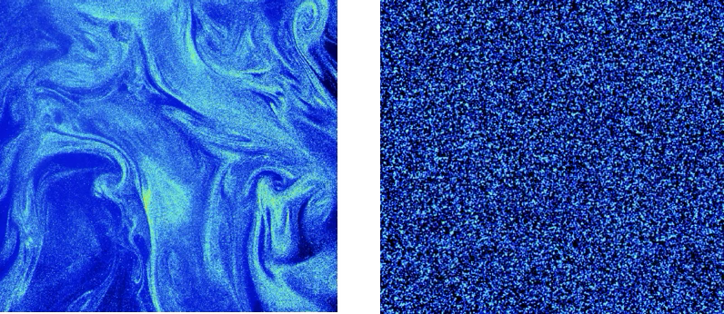
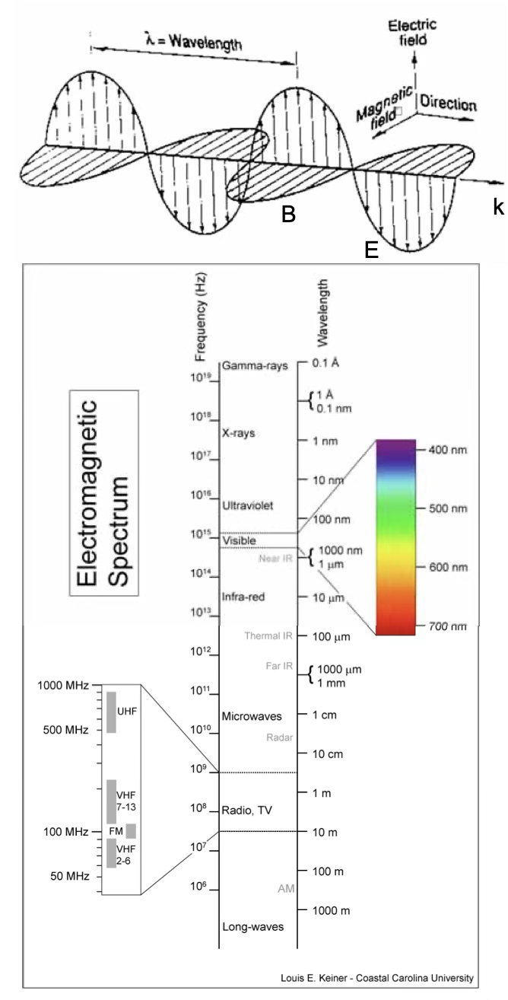
Light scattering
For spherical particles with diameters \(d_p\) larger than the wavelength of the incident light \(\lambda\), Mie’s scattering theory holds.
Maximum light diffused at 0°
– Particle type/shape/size
– Refraction index
– Nature of the environment

Illumination sheet
Use of spherical and cylindrical lenses
– Cylindrical lens curvature and concavity (F2)
– Focal length of the spherical lens (F1)
– Divergence and diameter of the laser beam
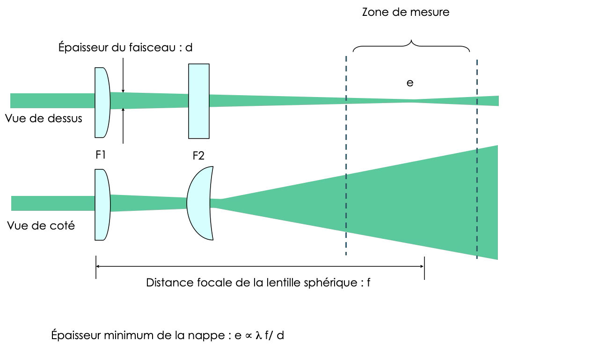
Image recording
See B. Radisson’s lecture.
Complete setup overview
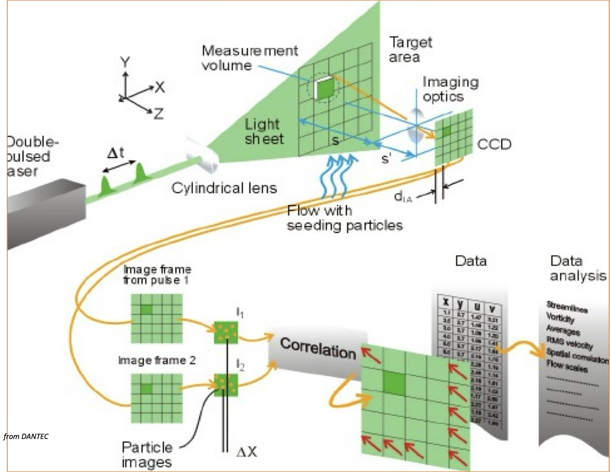Resolution requirements in fluid flows (1/2)
- One of the major difficulties in flow imaging is achieving adequate spatial and temporal resolution. This is particularly the case when flows are turbulent, if it is desired to resolve the smallest scales at which fluctuations occur.
- Laminar flows pose less stringent requirements on resolution, compared to turbulent flows. In many laminar shear flows including boundary layers, pipe flows, wakes, jets, and mixing layers, the maximum gradient is the same order of magnitude as the overall gradient, \[\left(\frac{\partial U}{\partial y} \right)_{\rm max} \approx \frac{\Delta U}{\delta}\] where \(\Delta U\) is the characteristic velocity difference, \(\delta\) is the local width of the shear flow.
Resolution requirements in fluid flows (2/2)
- Turbulent flows have substantially more severe resolution requirements than laminar flows, owing to the much larger gradients that occur at the smallest scales of turbulence.
- In turbulent flows, the spatial fluctuations range in scale from the largest physical dimension of the flow (e.g., the local width of the boundary layer or jet) to the scale at which diffusion acts to remove all gradients.
- The largest scales are often called the ‘‘outer scales,’’ whereas the smallest scales are the ‘‘inner’’ or dissipation scales because these are the scales at which the energy of fluctuations, whether kinetic or scalar, is dissipated.
- In classical turbulence theory, the kinetic energy dissipation scale is the Kolmogorov scale \[\eta \equiv \left( \frac{\nu ^3}{\epsilon} \right)^{1/4}.\]
- Using scaling arguments, the Kolmogorov scale can also be related to outer scale variables through the relationship, \(\eta \propto Re^{-3/4}\).
Summary
Developping a PIV setup is a seek for a compromise regarding,
– Neutrally buoyant
– As small as possible
– Good light scattering
– Large enough
Air vs water
Application
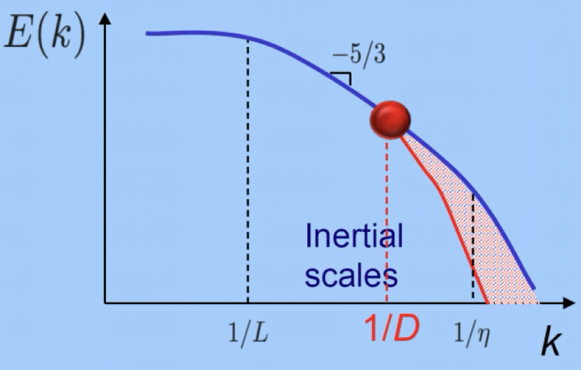
Image evaluation methods
Frame 1
Frame 2
Objective
Estimate a velocity-field from a couple of grayscale particle images, i.e. find \(\vec{V}(\vec{x},t)\) from \(I(\vec{x},t,t+\Delta t)\), \(I \in [0,255]\).
- Ideally, a high data density is preferred on the PIV vector fields, particularly when significant spatial flow variations must be resolved or when comparing experimental data with numerical results.
- This requires a medium concentration of the images of the tracer particles in the PIV recording.
- Medium image concentration is characterized by the fact that matching pairs of particle images – due to subsequent illuminations – cannot be detected by visual inspection.
- Hence, statistical approaches were developed.
From \(I(\vec{x},t,t+\Delta t)\), \(I \in [0,255]\)
From \(I(\vec{x},t,t+\Delta t)\), \(I \in [0,255]\)
# import the standard numerical and plotting packages
import numpy as np
import matplotlib.pyplot as plt
# import what is necessary from OpenPIV
from openpiv import tools
# load the images
a = tools.imread("./images/B005_1.tif")
b = tools.imread("./images/B005_2.tif")
fig, axs = plt.subplots(1, 2, figsize=(9, 4))
img = axs[0].imshow(a, vmin=0, vmax=100, cmap=plt.cm.gray)
axs[0].set_title('frame A')
img = axs[1].imshow(b, vmin=0, vmax=100, cmap=plt.cm.gray)
axs[1].set_title('frame B')
cbar = fig.add_axes([0.95, 0.1, 0.03, 0.8])
fig.colorbar(img, cax=cbar)
plt.show()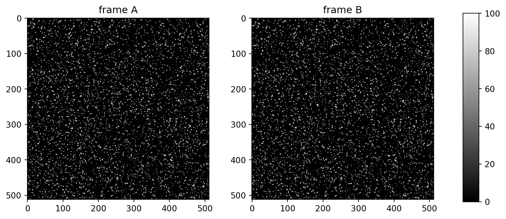
Windowing
Let’s focus on small portions of the images:
win_size = 32
a_win = a[:win_size, :win_size].copy()
b_win = b[:win_size, :win_size].copy()
fig, axs = plt.subplots(1, 2, figsize=(9, 4))
img = axs[0].imshow(a_win, vmin=0, vmax=100, cmap=plt.cm.gray)
axs[0].set_title('IA')
img = axs[1].imshow(b_win, vmin=0, vmax=100, cmap=plt.cm.gray)
axs[1].set_title('IB')
cbar = fig.add_axes([0.95, 0.1, 0.03, 0.8])
fig.colorbar(img, cax=cbar)
plt.show()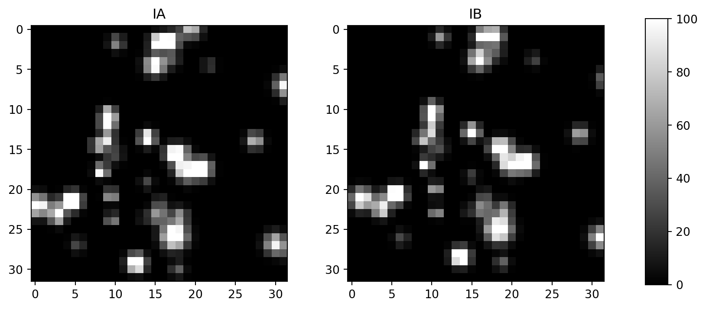
The movement of individual particles from frame A to frame B is untrackable by “hand”.
Shifting
We could then try to shift the window IA by some pixels along the horizontal and/or vertical directions
fig, axs = plt.subplots(1, 3, figsize=(9, 4))
img = axs[0].imshow(b_win - a_win, cmap=plt.cm.gray)
axs[0].set_title("IB - IA(shift=0)")
img = axs[1].imshow(b_win - np.roll(a_win, (1, 0), axis=(0, 1)), cmap=plt.cm.gray)
axs[1].set_title("IB - IA(shift=1 pxl)")
img = axs[2].imshow(b_win - np.roll(a_win, (2, 0), axis=(0, 1)), cmap=plt.cm.gray)
axs[2].set_title("IB - IA(shift=2 pxl)")
cbar = fig.add_axes([0.95, 0.1, 0.03, 0.8])
fig.colorbar(img, cax=cbar)
plt.show()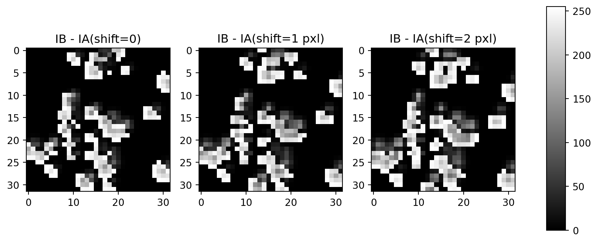
Optimal matching?
Let’s try to find the best shift algorithmically: shift and calculate the sum of squared differences, the minimum of which should be the best shift.
def match_template(img, template, maxroll=8):
# img: input image to compare
# template: image to match against
# maxroll: max nbr of pxl to shift in each dir. Default value is 8.
best_dist = np.inf
best_shift = (-1, -1)
for y in range(-maxroll,maxroll):
for x in range(-maxroll,maxroll):
# calculate Euclidean distance
dist = np.sqrt(np.sum((img - np.roll(template, (y, x), axis=(0, 1))) ** 2))
if dist < best_dist:
best_dist = dist
best_shift = (y, x)
return (best_dist, best_shift)
# Let’s check that it works by manually shifting the same image (IA):
match_template(np.roll(a_win, (2, 0), axis=(0, 1)), a_win)(0.0, (2, 0))Optimal matching?
Let’s try to find the best shift algorithmically: shift and calculate the sum of squared differences, the minimum of which should be the best shift.
(123.80226169178009, (-1, 1))Well, this is not the true displacement, but it gives a hint.
The problem is that shifting each image and repeating the loop many times is impractical.
Optimal matching?
Let’s use a different matching principle, based on the cross-correlation:
\[R_{II}(x,y) = \sum_{i=-K}^K \sum_{j=-L}^L I(i,j) I'(i+x,j+y)\]
- \(I(x,y) =\) Pixel grayscale \((i,j)\) of the 1st image (instant \(t\))
- \(I'(x,y) =\) Pixel grayscale \((i,j)\) of the 2nd image (instant \(t+\Delta t\))
- \(2K\), \(2L\) = Dimension of the analysis area (mesh).
This is statistical information. We do not look for particle-to-particle speed!
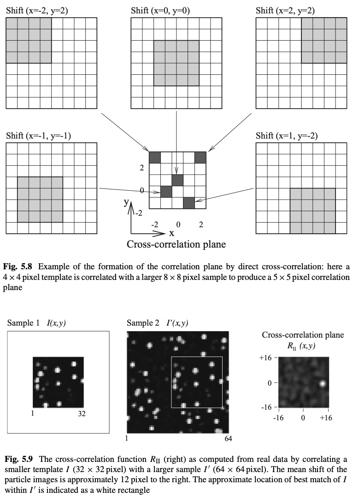
CC interrogation technic
Direct calculation: very long! : \(2M^2N^2\) operations \(\Rightarrow\) Calculation of the correlation function by FFT: \(2N^2\log_2N\) (if \(N=M\)).
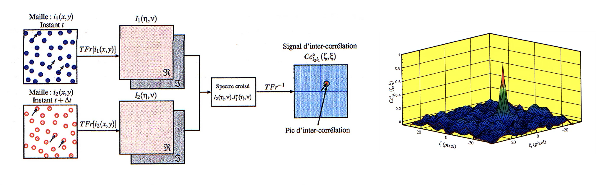CC interrogation technic
CC is an efficient computational algorithm to find out the right shift.
# import the required package
from scipy.signal import correlate
cross_corr = correlate(b_win - b_win.mean(), a_win - a_win.mean(), method="fft")
# let's see what the cross-correlation looks like
Y, X = np.meshgrid(np.arange(cross_corr.shape[0]), np.arange(cross_corr.shape[1]))
fig = plt.figure()
ax = fig.add_subplot(projection="3d")
ax.plot_surface(Y, X, cross_corr, cmap='jet', linewidth=0.2)
plt.title("Correlation map — peak is the most probable shift")
plt.show()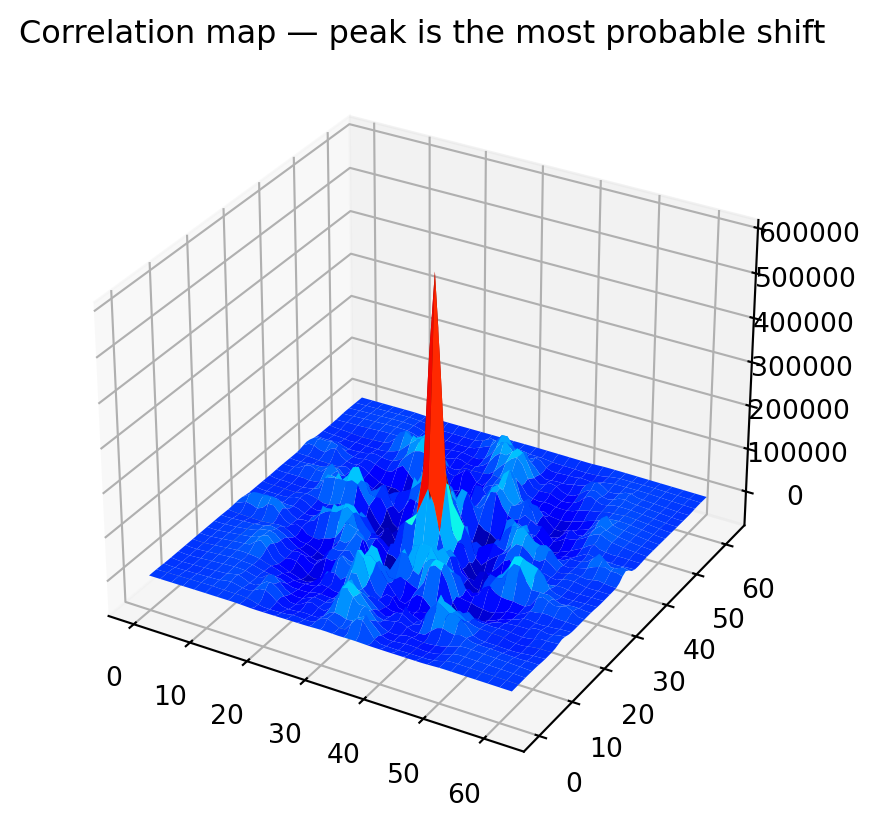
CC interrogation technic
We can get the first velocity field by repeating this analysis for all windows.
def vel_field(curr_frame, next_frame, win_size):
ys = np.arange(0, curr_frame.shape[0], win_size)
xs = np.arange(0, curr_frame.shape[1], win_size)
dys = np.zeros((len(ys), len(xs)))
dxs = np.zeros((len(ys), len(xs)))
for iy, y in enumerate(ys):
for ix, x in enumerate(xs):
int_win = curr_frame[y : y + win_size, x : x + win_size]
search_win = next_frame[y : y + win_size, x : x + win_size]
cross_corr = correlate(
search_win - search_win.mean(), int_win - int_win.mean(), method="fft"
)
dys[iy, ix], dxs[iy, ix] = (
np.unravel_index(np.argmax(cross_corr), cross_corr.shape)
- np.array([win_size, win_size])
+ 1
)
# locate velocity vectors from the center of each window
ys = ys + win_size / 2
xs = xs + win_size / 2
return xs, ys, dxs, dys
xs, ys, dxs, dys = vel_field(a, b, 32)
norm_drs = np.sqrt(dxs ** 2 + dys ** 2)
fig, ax = plt.subplots(figsize=(9, 4))
ax.quiver(
xs,
ys[::-1],
dxs,
-dys,
norm_drs,
cmap="plasma",
angles="xy",
scale_units="xy",
scale=0.25,
)
ax.set_aspect("equal")
plt.show()
CC interrogation technic
Let’s have a look back at the CC map:
y=30, x=32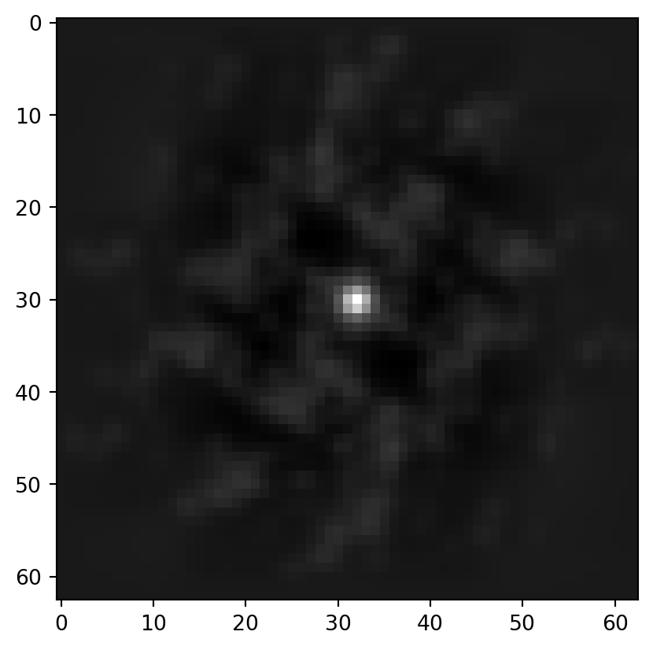
The information is discrete (pxl)! Very high uncertainty for displacements close to 1 pxl
Sub-pixel interpolation of the correlation peak (Gaussian, parabolic, etc.) over 3, 5 or 7 pxls \(\Rightarrow\) theoretical accuracy 0.01 pxl.
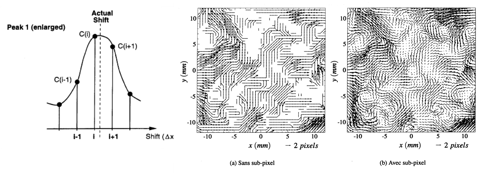
CC interrogation technic
errors
- The interpolation of correlation peaks causes a bias towards integer values displacements (Peak locking effect)
- This effect increases when the particle image size < 2 pixels
- Solutions to correct this effect: choice of the interpolation function, iterative PIV, etc. 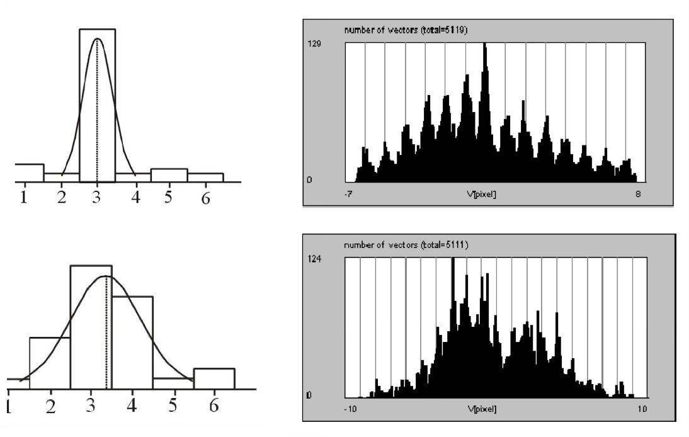
– Actual particle size
– Particle brigthness
– Sensor pixel size
– Focus
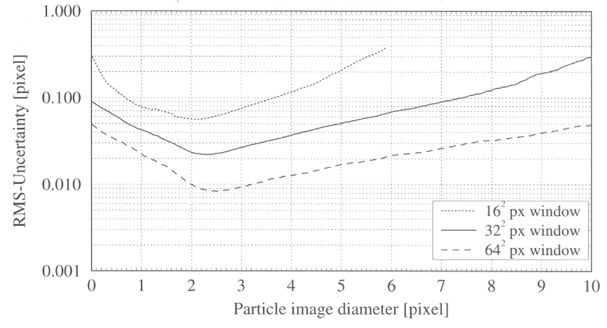
Parameters
Taking good quality images is an art!
- Homogeneous, regular tracer density \(\rightarrow\) correlation relevance
- Particle image size (ideal: ~3/4 pixels): Detectability / Pixel locking
- No saturation of particle images on the CCD sensor
- No reflection, background noise,…
- Gaussian laser beams
- Superimposed laser sheets, ideal thickness ~ 500μm
- Time between pulses: In plane displacement => resolution Out of plane displacement => lost particles
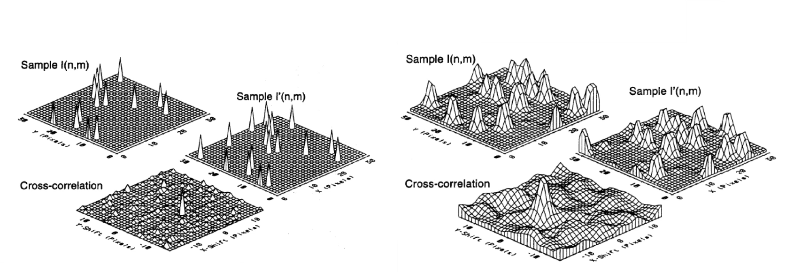
Parameters
Correlation coefficient for different displacements, i.e. different time between pulses
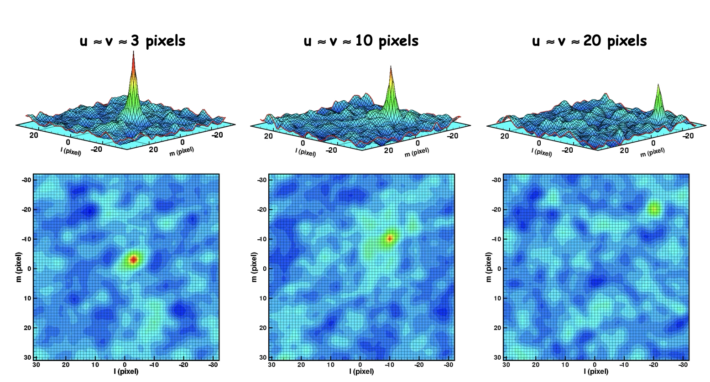
Spatial resolution
Typical mesh sizes: \(32 \times 32\), \(64 \times 64\), \(128 \times 128\) pixel \(^2\)
Typical pixel size: \(0.1\) mm to \(1\) mm
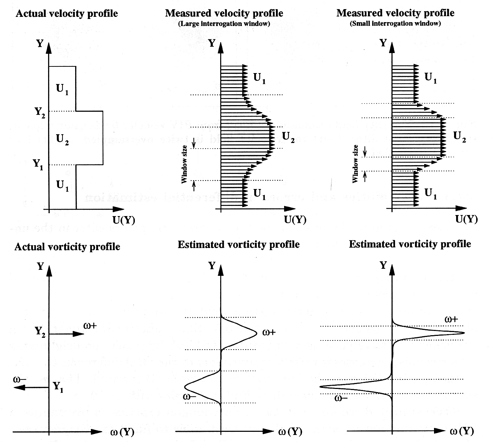Spatial resolution
Overlaping of the interrogation windows: typically 50%, 75%
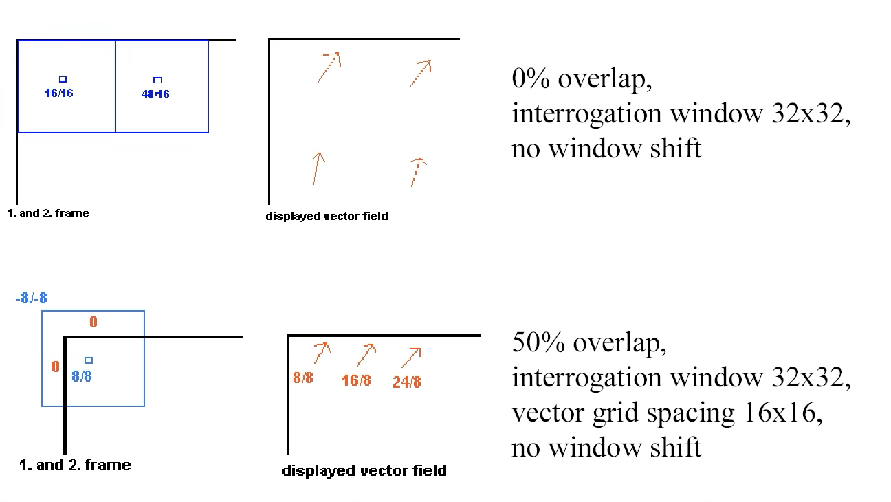Spatial resolution
If strong gradients
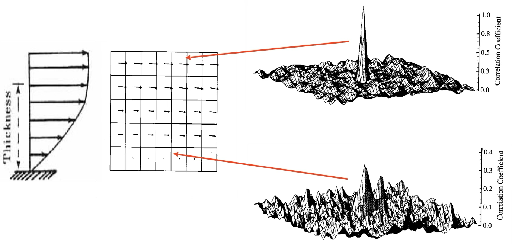\(\rightarrow\) towards multi-pass
Multi-pass
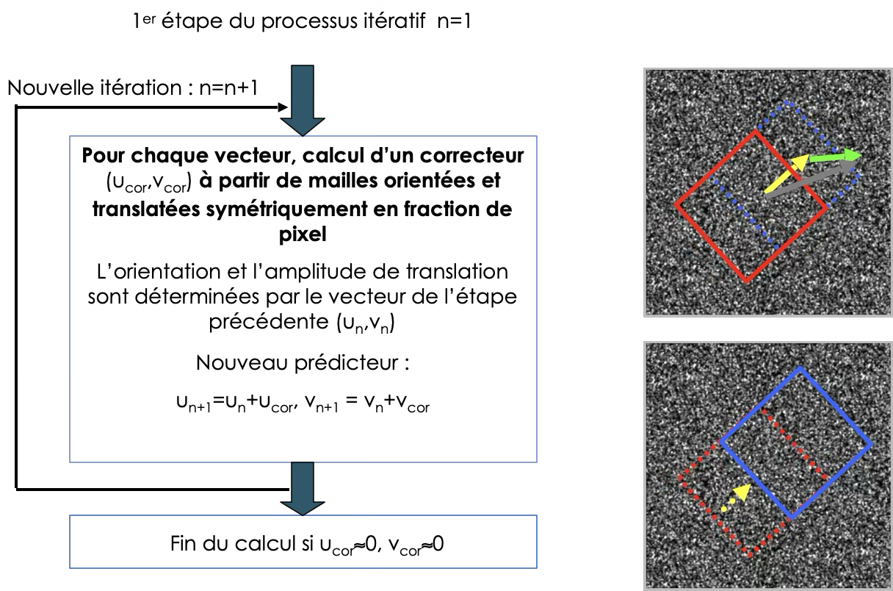Validation procedure
Quality factor (signal-to-noise ratio):
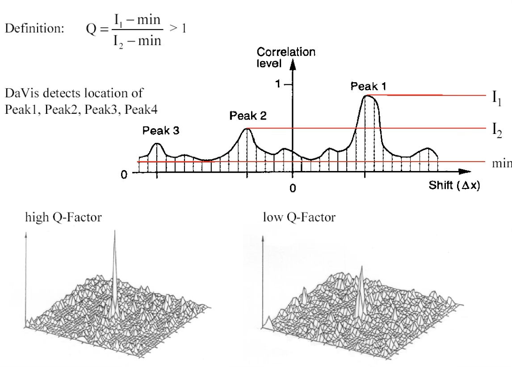Validation procedure
- Comparison of vectors with their \(k \equiv [i-N:i+N,j-N:j+N]\) neighbors: suppression/replacement if, e.g., \[V_{ij} > \overline{V_k} \pm K \times {\rm RMS(neighbors)}\]
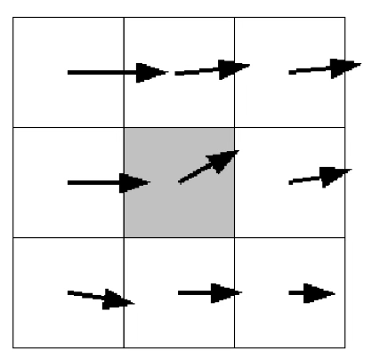
- Spatial filtering (vectors interpolation): Post-processing is not an artistic creation! It is necessary to remove the noise as much as possible without removing the signal
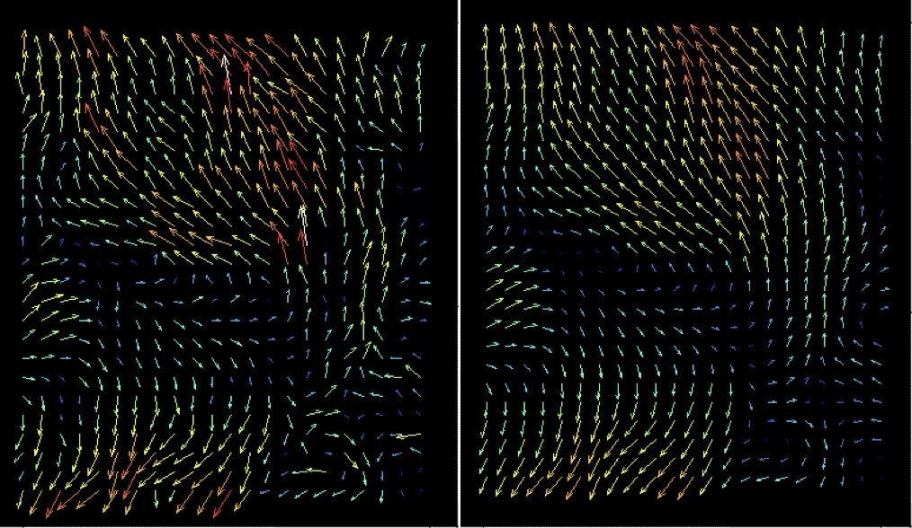
And More…
- Footer & Logo (optionally specify custom footer per-slide or hide global footer)
- Multiplex (allows your audience to follow the slides of the presentation you are controlling on their own phone, tablet or laptop).
Learn more: Quarto Presentations
UM5MEE12 – Experimental technics and data analysis, 2025